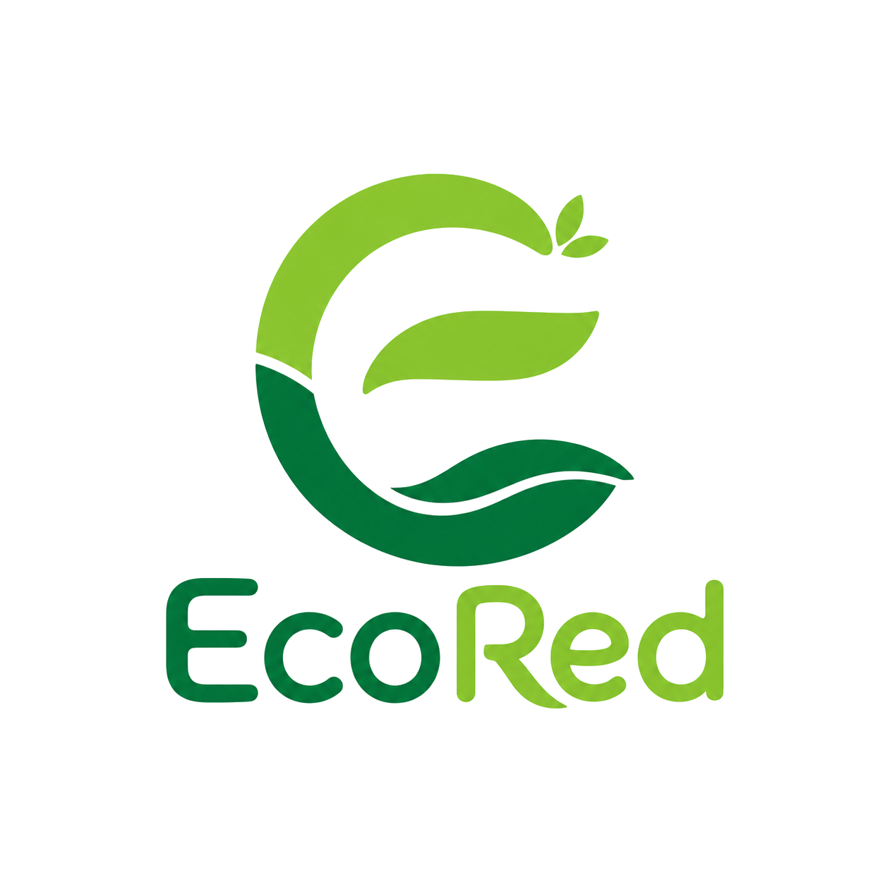

Botellas reutilizables
Eco friendly y duraderas
Ver oferta
Recicla, reutiliza y conectate con una comunidad circular.
Nosotros ponemos las 2R, tu pones la tercera.
Beneficios iniciales para activar la comunidad circular.
Eco friendly y duraderas
Ver ofertaDale vida a tus espacios
Ver ofertaLleva tu compromiso
Ver ofertaAprende y cuida el planeta
Ver ofertaEcoRed no es solo marketplace: conecta actores, campanas, datos y reputacion.
Campanas por ciudad, pagos estimados por kg, rutas y empresas recicladoras verificadas.
Explorar moduloProductos de segunda mano, liquidaciones empresariales y publicaciones destacadas.
Explorar moduloPosts, medallas, hojas de reputacion, EcoScore y mini juego ambiental.
Ir a ComunidadPublicas material o producto, la plataforma conecta actores locales, valida reputacion y organiza campanas, rutas o liquidaciones.
Material reciclable, producto reutilizable o convocatoria ambiental.
Usuarios, empresas verificadas, recicladores e instituciones trabajan por ciudad.
EcoScore, hojas de reputacion y metricas de impacto para decision publica y privada.
Dashboard, campanas, rutas, afiliados y estadisticas.
Productos destacados, publicaciones comerciales y reputacion conectada.
Convocatorias gratuitas en Recicla con verificacion manual.
Mensajes destacados, reputacion y reportes contra spam.
Equipo universitario EcoRed: producto, frontend, impacto ambiental y alianzas locales.
Quieres una campana piloto, dashboard o convocatoria?
Contactar